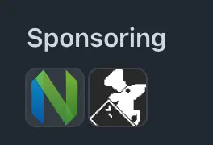

GitHub Sponsorsの寄付先にratatuiを追加した

目次
こちらの記事で寄付するOSSプロジェクトの選び方として次のような基準が紹介されていた。
寄付するプロジェクトはこういう基準で選んでる
- 自分が使っていてなくなったら困る
- マイナーであまり寄付されていない
今まで前者の基準に則ってneovim に寄付していたが、後者の観点を持てていなかったことに気付いた。そこで自分もOSSへの寄付を見直してみようと思った。
というわけで⌗
タイトルの通りだが、GitHub Sponsorsの寄付先にratatui を追加した。
ratatui とは、手軽にTUIアプリケーションを作成できるRust用のライブラリで、筆者が個人開発しているOSSであるfzf-make でも利用している。1
 ratatui
のおかげでこんな感じのUIを手軽に実装できている。
ratatui
のおかげでこんな感じのUIを手軽に実装できている。
Rust製のTUIツールでは非常に幅広く利用されている印象だが、現在のスポンサー数が9人と少なかったので少しでも力になれればということで寄付先に追加した。長期間メンテされる状態が続いてくれると嬉しい。自分にもできそうなバグ修正があれば挑戦してみようと思う。
 10番目のスポンサーになった様子。
10番目のスポンサーになった様子。
これで現在の寄付額は$10/月で、neovim とratatui にそれぞれ$5ずつ寄付していることになる。

他にも寄付したいプロジェクトは山ほどあるので山ほど稼いでいきたい。(あと円高頼む…)
まとめ⌗
今後ともOSSコミュニティの持続可能性を高めていきたい。
-
make targetをプレビューウィンドウ付きであいまい検索によって選択&実行できるツール。brewやcargoでインストールできるのでぜひ。 https://github.com/kyu08/fzf-make ↩︎
Read other posts